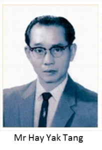
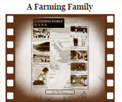

A HISTORY OF FARMING
In 1920, Mr Hay Yak Tang came to Singapore at the age of 16 as a teacher. Finding little interest in his profession, Mr Hay became a clerk for a hatchery instead and later started his own hatchery.
Subsequently, he bought a 16-acre plantation in Punggol and started Yak Seng Hay Farm to rear ducks, chickens and pigs. From there, he bred his own chickens as layers as well as sold chickens from his own farm.
By the 1970s, he decided to switch to pig farming. Breeders were imported from the US and as the business subsequently expanded, eight of his eleven sons were helping out in the day-to-day farm operations. In the next 10 years, Hay’s farm held 20,000 pigs, had over 30 workers and became one of the biggest pork suppliers to the local Singapore market.
In the early 80s, pig farming was phased out in Singapore and with help from the Singapore Food Agency (previously known as Agri-Food and Veterinary Authority-AVA / Primary Production Department-PPD), Hay Dairies developed goat farming as an alternative livelihood. AVA gave the Hay family contacts in the US and with our first batch import of Alpine, Nubian, Toggenburg and Saanen goats, the Hay family officially started goat farming on 22 December 1988.
 
About Them
FOLLOW THEM ON:


Address : 3 Lim Chu Kang Lane 4, Singapore 718859
Phone : (65) 6792 0931
Email : order@haydairies.com.sg